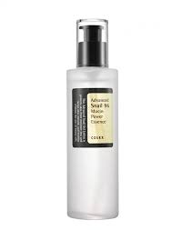
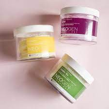
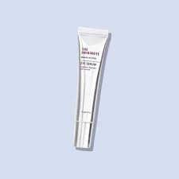
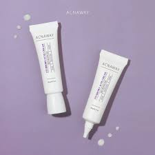
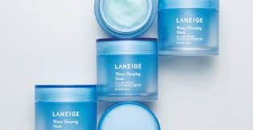

Why Evening Skincare?
Evening skincare is crucial for repairing and rejuvenating your skin while you sleep. It helps maintain a healthy and youthful complexion. Remember that the night time is an excellent opportunity to provide your skin with the care it needs, allowing you to greet each new day with a vibrant and radiant appearance.
Evening Skincare Routine
Follow this evening skincare routine for refreshed and revitalized skin:

Cleanser: Menghilangkan kotoran, minyak, dan makeup yang menumpuk selama seharian.

Toner: Menyeimbangkan pH kulit dan memberikan menghidrasi kulit.
Essence: Menjaga kelembapan kulit dan menahan agar selalu terhidrasi.
Exfoliate: Mengangkat sel-sel kulit mati, membuka pori-pori, dan memperbaiki tekstur kulit. Exfoliasi dilakukan 1 sampai 2 kali dalam seminggu.
Eye Serum: Melawan radikal bebas dan mencegah penuaan dini di area kantong mata.
Acne Cream: Menghempas masalah jerawat yang mengganggu penampilan.
Sleep Mask: Membuat kulit terasa lembap dan tampak sehat seakan kulit wajah mendapatkan istirahat yang cukup dengan perawatan terbaik selama tidur.
Benefits of Evening Skincare
The benefits of evening skincare include:
- Skin repair and renewal
- Improved skin texture
- Prevention of premature aging